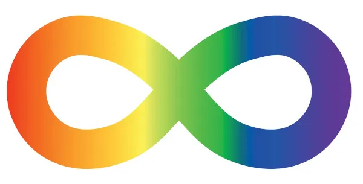

Ele representa a diversidade no espectro autista, e suas cores vibrantes são frequentemente usadas para simbolizar a variedade de experiências e capacidades das pessoas com TEA.
Quebra-cabeça
Logotipo da neurodiversidade
Este símbolo é amplamente utilizado em movimentos que defendem a aceitação e a compreensão, em vez da cura ou “normalização” do autismo. O formato do infinito reflete a ampla variedade de experiências no espectro.

Fita com desenhos de Girassol
Inspirado na beleza e resiliência dos girassóis, esse cordão representa solidariedade e compreensão. Ele é destinado a todas as pessoas com deficiências ocultas e/ou invisíveis, que são condições de saúde não facilmente identificáveis ou visíveis externamente, ou seja, deficiências que não possuem um fenótipo padrão.

Fita de conscientização do autismo
O símbolo também é popular para demonstrar apoio à causa e informar a população sobre os direitos de quem está no espectro. Por esse motivo, é comum encontrar esse símbolo em placas de filas preferenciais em farmácias e supermercados, por exemplo.